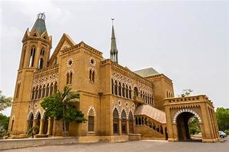
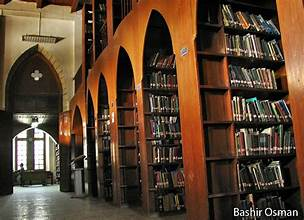

Frere Hall
A historic landmark and cultural heritage site in Karachi, built during the British colonial era.
A historic landmark and cultural heritage site in Karachi, built during the British colonial era.
Frere Hall, located in Karachi, Sindh, is one of the city’s most iconic heritage sites. Constructed in 1865 during the British Raj, it was originally intended to serve as Karachi’s town hall. The building was named after Sir Henry Bartle Edward Frere, a British colonial administrator.
Today, Frere Hall serves as a library, art gallery, and cultural space, attracting both locals and tourists. Its surrounding gardens, known as Bagh-e-Jinnah, provide a peaceful escape in the heart of Karachi.

Designed in Venetian Gothic style, Frere Hall features pointed arches, ribbed vaults, and stained glass windows. Built primarily with yellow Gizri sandstone, it reflects a blend of European and local architectural influences.
The building also houses the Liaquat National Library and is adorned with murals painted by the renowned artist Sadequain, making it both a cultural and historical landmark.
